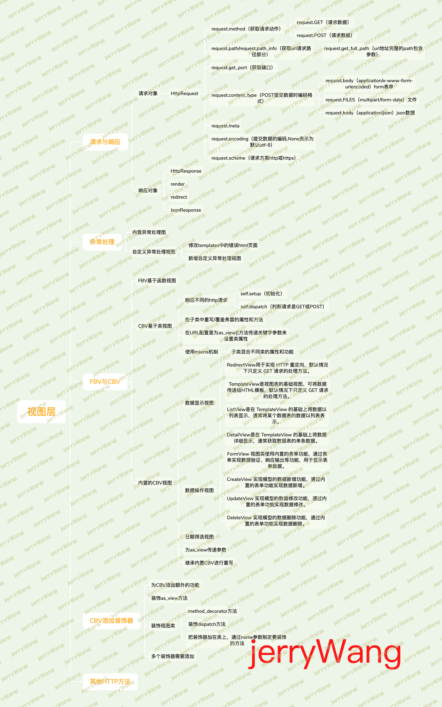

django的视图主要有2种，分别是函数视图和类视图
Django的视图层默认定义在views.py文件中，用来处理web请求信息和返回信息的函数：请求对象（HttpRequest）和相应对象（HttpResponse）
官网解释：请求和响应对象
一、请求与相应 请求对象（HttpReques） 当一个页面被请求时，django会创建一个包含本次请求原信息（如http协议请求报文中的请求行、首部信息、内容主体）的HttpRequest对象。
之后，django会找到匹配的视图，将该对象传给视图函数的第一个参数，约定俗称该参数名为request。
在视图函数中，通过访问该对象的属性便可以提取http协议的请求数据
常用的http请求：
POST 添加/上传
GET 获取/下载
PUT/PATCH 修改，其中PUT表示修改整体数据，PATCH表示修改部分数据
DELETE 删除
HttpRequest对象常用属性part1 1 2 3 4 5 6 7 8 9 10 11 12 13 14 15 16 17 18 19 20 21 22 23 24 25 26 27 28 29 30 31 32 33 34 request本质就是WSGIRequest的实例对象，父类是from django.http.request import HttpRequest 一.HttpRequest.method 获取请求使用的方法（值为纯大写的字符串格式）。例如："GET" 、"POST" 应该通过该属性的值来判断请求方法 在视图函数中： if request.method == "GET" : ... if request.method == "POST" : ... 二.HttpRequest.GET 值为一个类似于字典的QueryDict对象，封装了GET请求的所有参数，可通过HttpRequest.GET.get('键' )获取相对应的值 http://127.0 .0 .1 :8000 /app01/login?name=allen&passwd=123 <QueryDict: {'name' : ['allen' ], 'passwd' : ['123' ]}> QueryDict 是一个经过封装的字典，提供了基本的字典操作，还提供额外的操作给开发者获取字典内部的数据，因为python基本数据类型dict 是无法让字典在一个key下指向多个值的情况，所以Django封装了一个新的字典来实现 在视图函数中： request.GET.get('name' ) 三.HttpRequest.POST 值为一个类似于字典的QueryDict对象，封装了POST请求所包含的表单数据，可通过HttpRequest.POST.get('键' )获取相对应的值 在视图函数中： request.POST.get('name' ) 针对表单中checkbox类型的input 标签、select标签提交的数据，键对应的值为多个，需要用：HttpRequest.POST.getlist("hobbies" )获取存有多个值的列表,同理也有HttpRequest.GET.getlist("键" ) 针对有多个值的的情况，也可以用HttpRequest.GET.get("键" )，会获取列表中的最后一个值 四. 比如 request.method 获取请求动作 request.path 获取请求地址 request.path_info 获取请求地址信息 request.get_port 获取端口
案例：
urls.py views.py 在templates目录下新建login.html 1 2 3 4 5 6 from django.urls import re_pathfrom app01 import viewsurlpatterns = [ re_path('login/' ,views.login), ]
1 2 3 4 5 6 7 8 9 10 11 12 13 14 15 16 17 18 19 20 21 22 23 24 25 26 27 28 29 from django.shortcuts import render,HttpResponsedef login (request ): if request.method == 'GET' : print (request.GET) a=request.GET.get('a' ) b=request.GET.get('b' ) c=request.GET.getlist('c' ) c1=request.GET.get('c' ) c2=request.GET.dict () return render(request,'login.html' ) elif request.method == 'POST' : print (request.POST) name=request.POST.get('name' ) age=request.POST.get('age' ) hobbies=request.POST.getlist('hobbies' ) return HttpResponse('提交成功' )
1 2 3 4 5 6 7 8 9 10 11 12 13 14 15 16 17 18 19 20 21 22 23 24 25 26 27 <!DOCTYPE html > <html lang ="en" > <head > <meta charset ="UTF-8" > <title > 登录页面</title > </head > <body > <form action ="http://127.0.0.1:8000/login/" method ="post" > {% csrf_token %} <p > 用户名：<input type ="text" name ="name" > </p > <p > 年龄：<input type ="text" name ="age" > </p > <p > 爱好： <input type ="checkbox" name ="hobbies" value ="music" > 音乐 <input type ="checkbox" name ="hobbies" value ="read" > 阅读 <input type ="checkbox" name ="hobbies" value ="dancing" > 跳舞 </p > <p > <input type ="submit" value ="提交" > </p > </form > </body > </html >
HttpRequest对象常用属性part2 1 2 3 4 5 6 7 8 9 10 11 12 13 14 15 16 17 18 19 20 21 22 23 24 25 26 27 28 29 30 31 32 33 34 35 36 37 38 39 40 41 42 43 44 45 46 47 48 49 50 51 52 53 54 55 56 一.HttpRequest.body 1.1 当浏览器基于http协议的GET方法提交数据时(没有请求体一说),数据会按照k1=v1&k2=v2&k3=v3的格式放到url中，然后发送给django，django会将这些数据封装到request.GET中，注意此时的请求体request.body为空、无用 1.2 当浏览器基于http协议的POST方法提交数据时，数据会被放到请求体中发送给django，django会将接收到的请求体数据存放于HttpRequest.body属性中. 但该属性的值为Bytes类型(套接字数据传输都是bytes 类型)，而通常情况下直接处理Bytes、并从中提取有用数据的操作是复杂而繁琐的，好在django会对它做进一步的处理与封装以便我们更为方便地提取数据，具体如何处理呢？ 当前端采用POST提交数据时，数据有三种常用编码格式，编码格式不同Django会有不同的处理方式 HttpRequest.body中的数据格式为b'a=1&b=2&c=3' django会将其提取出来封装到request.POST中 request.FILES此时为空 如： print (request.body) print (request.POST) print (request.FILES) 详见：https://my.oschina.net/cnlw/blog/168466 ?fromerr=aQL9sTI2 HttpRequest.body中的数据格式为b'------WebKitFormBoundaryKtcwuksQltpNprep\r\nContent-Disposition: form-data;......' ,注意，文件部分数据是流数据，所以不在浏览器中显示是正常的 django会将request.body中的非文件数据部分提取出来封装到request.POST中 将上传的文件部分数据专门提取出来封装到request.FILES属性中 如： print (request.body) print (request.POST) print (request.FILES) 强调： 1 、毫无疑问，编码格式2 的数据量要大于编码格式1 ，如果无需上传文件，还是推荐使用更为精简的编码格式1 2 、FILES will only contain data if the request method was POST and the <form> that posted to the request had enctype="multipart/form-data" . Otherwise, FILES will be a blank dictionary-like object . 此时在django后台，request.POST和request.FILES中是没有值的，都放到request.body中了，需要用json.loads对其进行反序列化 如： print (request.body) print (request.POST) print (request.FILES) 1.3 如何设定POST提交数据的编码格式 前端往后台POST提交数据，常用技术有form表单和ajax两种 form表单可以设置的数据编码格式有：编码格式1 、编码格式2 ajax可以设置的数据编码格式有：编码格式1 、编码格式2 、编码格式3 我们将在后续章节中介绍ajax技术，此处我们先介绍我们熟知的form表单 form表单可以通过属性enctype进行设置编码格，如下 编码格式1 (默认的编码格式):enctype="application/x-www-form-urlencoded" 编码格式2 (使用form表单上传文件时只能用该编码):enctype="multipart/form-data"
案例：form表单上传文件
urls.py views.py 在templates目录下新建register.html 1 2 3 4 5 6 from django.urls import re_pathfrom app01 import viewsurlpatterns = [ re_path('register/' ,views.register), ]
1 2 3 4 5 6 7 8 9 10 11 12 13 14 15 16 17 18 19 20 21 22 23 24 25 26 27 28 29 30 31 32 33 34 35 36 37 38 39 40 41 42 43 44 45 46 47 from django.shortcuts import render,HttpResponsedef register (request ): ''' 保存上传文件前，数据需要存放在某个位置。默认当上传文件小于2.5M时，django会将上传文件的全部内容读进内存。从内存读取一次，写磁盘一次。 但当上传文件很大时，django会把上传文件写到临时文件中，然后存放到系统临时文件夹中。 ''' if request.method == 'GET' : return render(request, 'register.html' ) elif request.method == 'POST' : name = request.POST.get('name' ) file_obj = request.FILES.get('header_img' ) filename = file_obj.name print (filename) file_obj.chunks() with open (f"templates/{file_name} " , 'wb' ) as f: for line in file_obj.chunks(): f.write(line) return HttpResponse('注册成功' ) ''' file_obj.read() 当文件过大时，会导致内存溢出，系统崩溃 应该使用file_obj.chunks()读取，官网解释如下 uploadedFile.chunks(chunk_size=None)¶ A generator returning chunks of the file. If multiple_chunks() is True, you should use this method in a loop instead of read(). In practice, it’s often easiest simply to use chunks() all the time. Looping over chunks() instead of using read() ensures that large files don’t overwhelm your system’s memory. 注意：直接for循环file_obj也不行，因为直接for读取文件是按照行分隔符来依次读取的，不同平台下的文件行分隔符不同，有可能一行的数据就很大，所以还是推荐file_obj.chunks()来读取，官网解释如下 Like regular Python files, you can read the file line-by-line simply by iterating over the uploaded file: for line in uploadedfile: do_something_with(line) Lines are split using universal newlines. The following are recognized as ending a line: the Unix end-of-line convention '\n', the Windows convention '\r\n', and the old Macintosh convention '\r'. '''
1 2 3 4 5 6 7 8 9 10 11 12 13 14 15 16 17 18 19 20 21 22 <!DOCTYPE html > <html lang ="en" > <head > <meta charset ="UTF-8" > <title > 注册页面</title > </head > <body > <form action ="" method ="POST" enctype ="multipart/form-data" > {% csrf_token %} <p > 用户名:<input type ="text" name ="name" > </p > <p > 头像:<input type ="file" name ="header_img" > </p > <p > <input type ="submit" value ="提交" > </p > </form > </body > </html >
HttpRequest对象常用属性part3 1 2 3 4 5 6 7 8 9 一.HttpRequest.path 获取url地址的路径部分，只包含路径部分 二.HttpRequest.get_full_path() 获取url地址的完整path，既包含路径又包含参数部分 如果请求地址是http://127.0 .0 .1 :8000 /order/?name=allen&age=10 HttpRequest.path的值为"/order/" HttpRequest.get_full_path()的值为"/order/?name=allen&age=10"
案例：
1 2 3 4 5 6 from django.urls import path,register_converter,re_pathfrom app01 import viewsurlpatterns = [ re_path(r'^order' ,views.order), ]
1 2 3 4 5 6 7 8 9 10 from django.shortcuts import render,HttpResponsedef order (request ): print (request.path) print (request.get_full_path()) return HttpResponse('order page OK' )
HttpRequest对象常用属性part4（暂作了解） 1 2 3 4 5 6 7 8 9 10 11 12 13 14 15 16 17 18 19 20 21 22 23 24 25 26 27 28 29 30 31 32 33 34 35 36 37 38 39 40 41 42 43 44 45 46 47 48 49 50 51 52 53 54 55 56 57 58 59 60 61 62 63 64 65 66 67 68 69 70 71 72 73 74 75 76 77 78 79 80 81 82 83 84 85 86 87 88 """ django将请求报文中的请求行、头部信息、内容主体封装成 HttpRequest 类中的属性。 除了特殊说明的之外，其他均为只读的。 """ 一.HttpRequest.META 值为包含了HTTP协议的请求头数据的Python字典，字典中的key及期对应值的解释如下 CONTENT_LENGTH —— 请求的正文的长度（是一个字符串）。 CONTENT_TYPE —— 请求的正文的MIME类型。 HTTP_ACCEPT —— 响应可接收的Content-Type 。 HTTP_ACCEPT_ENCODING —— 响应可接收的编码。 HTTP_ACCEPT_LANGUAGE —— 响应可接收的语言。 HTTP_HOST —— 客服端发送数据的目标主机与端口 HTTP_REFERER —— Referring 页面。 HTTP_USER_AGENT —— 客户端使用的软件版本信息 QUERY_STRING —— 单个字符串形式的查询字符串（未解析过的形式）。 REMOTE_ADDR —— 客户端的IP地址。 REMOTE_HOST —— 客户端的主机名。 REMOTE_USER —— 服务器认证后的用户。 REQUEST_METHOD —— 一个字符串，例如"GET" 或"POST" 。 SERVER_NAME —— 服务器的主机名。 SERVER_PORT —— 服务器的端口（是一个字符串）。 从上面可以看到，除 CONTENT_LENGTH 和 CONTENT_TYPE 之外，HTTP协议的请求头数据转换为 META 的键时， 都会 1 、将所有字母大写 2 、将单词的连接符替换为下划线 3 、加上前缀HTTP_。 所以，一个叫做 X-Bender 的头部将转换成 META 中的 HTTP_X_BENDER 键。 注意：下述常用属性暂且了解即可，待我们讲到专门的知识点时再专门详细讲解 二.HttpRequest.COOKIES 一个标准的Python 字典，包含所有的cookie。键和值都为字符串。 三.HttpRequest.session 一个既可读又可写的类似于字典的对象，表示当前的会话。只有当Django 启用会话的支持时才可用。 11. HttpRequest.user(用户认证组件下使用) 一个 AUTH_USER_MODEL 类型的对象，表示当前登录的用户。 2. HttpRequest.is_ajax() 如果请求是通过XMLHttpRequest 发起的，则返回True ，方法是检查 HTTP_X_REQUESTED_WITH 相应的首部是否是字符串'XMLHttpRequest' 。 大部分现代的 JavaScript 库都会发送这个头部。如果你编写自己的 XMLHttpRequest 调用（在浏览器端），你必须手工设置这个值来让 is_ajax() 可以工作。 如果一个响应需要根据请求是否是通过AJAX 发起的，并且你正在使用某种形式的缓存例如Django 的 cache middleware， 你应该使用 vary_on_headers('HTTP_X_REQUESTED_WITH' ) 装饰你的视图以让响应能够正确地缓存。 四.HttpRequest.encoding 一个字符串，表示提交的数据的编码方式（如果为 None 则表示使用 DEFAULT_CHARSET 的设置，默认为 'utf-8' ）。 这个属性是可写的，你可以修改它来修改访问表单数据使用的编码。 接下来对属性的任何访问（例如从 GET 或 POST 中读取数据）将使用新的 encoding 值。 如果你知道表单数据的编码不是 DEFAULT_CHARSET ，则使用它。 五.HttpRequest.scheme 表示请求方案的字符串（通常为http或https） 六.HttpRequest.user 一个AUTH_USER_MODEL类型的对象，表示当前登录的用户。 如果用户当前没有登录，user将设置为django.contrib.auth.models.AnonymousUser的一个实例。 你可以通过is_authenticated()区分它们，例如： if request.user.is_authenticated(): else : HttpRequest.user只有当Django 启用 AuthenticationMiddleware中间件时才可用。 匿名用户 class models .AnonymousUser django.contrib.auth.models.AnonymousUser 类实现了django.contrib.auth.models.User 接口，但具有下面几个不同点： id 永远为None 。 username 永远为空字符串。 get_username() 永远返回空字符串。 is_staff 和 is_superuser 永远为False 。 is_active 永远为 False 。 groups 和 user_permissions 永远为空。 is_anonymous() 返回True 而不是False 。 is_authenticated() 返回False 而不是True 。 set_password()、check_password()、save() 和delete() 引发 NotImplementedError。 New in Django 1.8 : 新增 AnonymousUser.get_username() 以更好地模拟 django.contrib.auth.models.User。
响应对象 请求对象HttpRequest是由django为我们创建好的，直接使用即可，而响应对象则需要我们负责创建。我们编写的每个视图都应该返回一个HttpResponse对象，响应可以是一个网页的HTML内容，一个重定向，一个404错误，一个XML文档，或者一张图片。用来返回响应对象的常用类如下
1 2 3 4 from django.shortcuts import HttpResponsefrom django.shortcuts import redirectfrom django.shortcuts import renderfrom django.http importJsonResponse
HttpResponse 传递字符串
1 2 3 4 5 6 7 8 9 10 11 12 13 14 15 16 17 18 19 20 21 22 23 24 25 from django.http import HttpResponseresponse = HttpResponse("Here's the text of the Web page." ) response = HttpResponse("Text only, please." , content_type="text/plain" ) ''' ps：Content-Type用于指定响应体的MIME类型 MIME类型： mime类型是多用途互联网邮件扩展类型。是设定某种扩展名的文件用一种应用程序来打开的方式类型,当该扩展名文件被访问的时候,浏览器会自动使用指定应用程序来打开 MIME 类型有非常多种，一般常见的有： text/html：浏览器在获取到这种文件时会自动调用html的解析器对文件进行相应的处理。 text/plain：意思是将文件设置为纯文本的形式，浏览器在获取到这种文件时并不会对其进行处理。 image/jpeg：JPEG格式的图片 image/gif：GIF格式的图片 video/quicktime：Apple 的 QuickTime 电影 application/vnd.ms-powerpoint：微软的powerpoint文件 '''
依次增加字符串（了解）
1 2 3 >>> response = HttpResponse()>>> response.write("<p>Here's the text of the Web page.</p>" )>>> response.write("<p>Here's another paragraph.</p>" )
传递迭代器对象（了解）
1 2 3 4 5 6 7 8 9 def index (request ): f=open (r'a.txt' ,mode='r' ,encoding='utf-8' ) response=HttpResponse(f) print (response.content) return response
自定义添加或删除响应头信息
1 2 3 4 response = HttpResponse() response['Content-Type' ] = 'text/html; charset=UTF-8' response['X-Frame-Options' ] = 'SAMEORIGIN' del response['Content-Type' ]
属性
1 2 3 4 5 HttpResponse.status_code：响应的状态码 HttpResponse.charset：响应内容的编码encode格式 HttpResponse.content：响应内容
返回图片信息
1 2 3 4 5 6 7 8 9 10 11 12 13 14 def index (request ): '''相应内容''' ''' 通过django.http.response.HttpResponse响应html内容 return HttpResponse("<h1>HELLO</h1>") content: 响应正文内容 status： 响应状态码 content-type: 响应内容的MIME类型 ret = HttpResponse(content='HELLO',status='206',content_type='text/html') return ret ''' content=open ('qqq.png' ,'rb' ).read() return HttpResponse(content=content,status=206 ,content_type="image/png" )
提供下载支持
1 2 3 4 def wget (request ): with open (r"C:\Users\User\Downloads\app.zip" , 'rb' ) as f: content=f.read() return HttpResponse(content=content,content_type="application/x-zip-compressed" )
字符串编码：
1 2 3 4 5 6 7 8 9 10 11 12 13 14 15 16 17 18 19 20 21 22 23 24 response = HttpResponse(charset='gbk' ,content_type='text/html; charset=gbk' ) def index (request ): response = HttpResponse(charset='gbk' ,content_type='text/html; charset=gbk' ) response.charset='gbk' response.write("<p>Hello allen美男子</p>" ) response.write("<p>Hello 林sb</p>" ) response['Content-Type' ]='text/html; charset=gbk' print (response.charset) print (response.content) return response
render 1 2 3 4 5 6 7 8 9 10 11 12 13 14 15 16 17 18 19 20 def render (request, template_name, context=None , content_type=None , status=None , using=None ): """ Return a HttpResponse whose content is filled with the result of calling django.template.loader.render_to_string() with the passed arguments. """ content = loader.render_to_string(template_name, context, request, using=using) return HttpResponse(content, content_type, status) 参数： 1 、request：用于生成响应的请求对象，固定必须传入的第一个参数 2 、template_name：要使用的模板的完整名称，必须传入，render默认会去templates目录下查找模板文件 3 、context：可选参数，可以传入一个字典用来替换模块文件中的变量，默认是一个空字典。如果字典中的某个值是可调用的，视图将在渲染模板之前调用它。 4 、content_type：生成的文档要使用的MIME类型。默认为 DEFAULT_CONTENT_TYPE 设置的值。默认为'text/html' 5 、status：响应的状态码。默认为200 。 6 、useing: 用于加载模板的模板引擎的名称。
综上，render的功能可以总结为：根据给定字典渲染模板文件，并返回一个渲染后的HttpResponse对象。简单示例如下
urls.py views.py templates目录下新增文件index.html 1 2 3 4 5 6 from django.urls import re_pathfrom app01 import viewsurlpatterns = [ re_path(r'^$' ,views.index), ]
1 2 3 4 5 6 7 8 9 10 11 12 13 14 from django.shortcuts import renderdef index (request ): return render(request, 'index.html' , {'name' : 'allen' , 'tag' : 'dsb' }) from django.shortcuts import renderfrom django.template import loaderdef index (request ): t = loader.get_template('index.html' ) dic = {'name' : 'allen' , 'tag' : 'dsb' } return HttpResponse(t.render(dic, request)
1 2 3 4 5 6 7 8 9 10 11 <!DOCTYPE html > <html lang ="en" > <head > <meta charset ="UTF-8" > <title > Title</title > </head > <body > <p > {{ name }}</p > <p > {{ tag }}</p > </body > </html >
测试
redirect 1 2 3 4 5 6 7 8 9 10 11 12 13 14 15 返回重定向对象，返回的状态码为302 ，第一个参数用来指定浏览器重定向的地址，可以是 def baidu (request ): return redirect("https://www.baidu.com" ) def baidu (request ): '''浏览器收到Location和302后就自动跳转''' response=HttpResponse("" ,status=302 ) response["Location" ]="https:/www.baidu.com" return response
示例如下
1 2 3 4 5 6 7 from django.urls import re_pathfrom app01 import viewsurlpatterns = [ re_path(r'^baidu/$' , views.baidu), ]
1 2 3 4 5 6 7 8 from django.shortcuts import HttpResponse,redirectdef index (request ): return redirect('/login/' ) def login (request ): return HttpResponse("login page" )
测试：
1 启动django，在浏览器中访问url地址http://ip地址:端口号/index/，跳转到login页面
重定向转态码301与302的区别（了解）
1 2 3 4 5 6 7 8 9 10 11 12 13 14 15 16 17 一、301 和302 的异同。 1 、相同之处： 301 和302 状态码都表示重定向，具体点说就是浏览器在拿到服务器返回的这个状态码后会自动跳转到一个新的URL地址（浏览器会从响应头Location中获取新地址），用户看到的效果都是输入地址A后瞬间跳转到了另一个地址B 2 、不同之处： 301 表示永久重定向，旧地址A的资源已经被永久地移除了，即这个资源不可访问了。 302 表示临时重定向，旧地址A的资源还在，即这个资源仍然可以访问。 A页面临时重定向到B页面，那搜索引擎收录的就是A页面。 A页面永久重定向到B页面，那搜索引擎收录的就是B页面。 从SEO层面考虑，302 要好于301 二、重定向原因： 1 、网站调整（如改变网页目录结构）； 2 、网页被移到一个新地址； 3 、网页扩展名改变(如应用需要把.php改成.Html或.shtml)。 这种情况下，如果不做重定向，则用户收藏夹或搜索引擎数据库中旧地址只能让访问客户得到一个404 页面错误信息，访问流量白白丧失；再者某些注册了多个域名的网站，也需要通过重定向让访问这些域名的用户自动跳转到主站点等。
JsonResponse JSON就是Javascript Object Notation.最早来源于JavaScript
json就是一个数据格式，一般保存在文件中，以.json作为文件扩展名
json数据类型： 数组成员，可以是json中任何的数据类型，但是每一个成员之间必须以英文逗号隔开，最后一个成员后面不能带有逗号，否则报错！！！ 1 2 [ 1 , 2 , 3 ] [ 1 , "xiaoming" , true , false , [ 1 , 2 , 3 ] , { "k" : 1 , "w" : 0 } ]
json成员的键必须是字符串格式,成员之间用逗号隔开，最后一个成员不能带有逗号、 1 2 3 4 5 6 7 8 { "name" : "xiaoming" , "age" : 30 , "son" : { "name" : "xiaoxiaoming" , "age" : 3 } }
json文件中，一般只能存在一个json数据 json一般用于不同系统，不同项目之间传递数据用的， 向前端返回一个json格式字符串的两种方式
方式一：
1 2 3 4 5 6 7 8 9 10 11 12 13 def index (request ): import json content={ "name" :"xiaoming" , "age" :30 , "son" :{ "name" :"xiaoxiaoming" , "age" :3 } } content=json.dumps(content) return HttpResponse(content=content,status=206 ,content_type="application/json" )
方式二：
1 2 3 4 5 6 7 8 9 10 11 12 13 14 15 16 17 18 19 20 21 22 23 def index (request ): from django.http import JsonResponse content={ "name" :"xiaoming" , "age" :30 , "son" :{ "name" :"xiaoxiaoming" , "age" :3 } } return JsonResponse(content) def index (request ): from django.http import JsonResponse content=[ {"id" :10 ,"title" :"qqqqq" ,"pric" :10 }, {"id" :11 ,"title" :"wwwwww" ,"pric" :10 }, ] return JsonResponse(content,safe=False )
二、异常处理 django内置异常处理视图 Web应用在线上运行的过程中出现错误，是不可避免的，常见错误如
1 2 3 4 1 、400 ：400 Bad Request 是由于明显的客户端错误（例如，格式错误的请求语法，太大的大小，无效的请求消息或欺骗性路由请求），服务器不能或不会处理该请求。2 、403 ：用户没有访问某一资源的权限3 、404 ：请求的url地址不存在4 、500 ：服务端出错
django框架为其中的一些常见错误提供了标准的错误页面，但它们仅限于DEBUG=True调试模式下使用，要想符合生产环境的需求，则需要我们进行自定制，配置过程如下
步骤1.在templates目录下的顶层创建错误页面400.html、403.html、404.html、500.html，注意文件内容自定义，但文件名与放置位置不可改变
templates/400.html
1 2 3 4 5 6 7 8 9 10 <!DOCTYPE html > <html lang ="en" > <head > <meta charset ="UTF-8" > <title > Title</title > </head > <body > <h1 > 自定义400页面</h1 > </body > </html >
templates/403.html
1 2 3 4 5 6 7 8 9 10 11 12 <!DOCTYPE html > <html lang ="en" > <head > <meta charset ="UTF-8" > <title > Title</title > </head > <body > <h1 > 自定义403页面</h1 > <p > {{ exception }} </p > </body >
templates/404.html
1 2 3 4 5 6 7 8 9 10 11 12 13 <!DOCTYPE html > <html lang ="en" > <head > <meta charset ="UTF-8" > <title > Title</title > </head > <body > <h1 > 自定义404页面</h1 > <p > {{ exception }} </p > </body > </html >
templates/500.html
1 2 3 4 5 6 7 8 9 10 <!DOCTYPE html > <html lang ="en" > <head > <meta charset ="UTF-8" > <title > Title</title > </head > <body > <h1 > 自定义500页面</h1 > </body > </html >
步骤2.编写处理异常的视图
1 2 3 4 5 6 7 8 9 from django.views.defaults import bad_request from django.views.defaults import permission_denied from django.views.defaults import page_not_found from django.views.defaults import server_error
步骤3.请将 settings.py 中的 DEBUG设置为Fasle,这样，如果出现错误，就会出现我们自己定义的页面
1 2 3 4 5 DEBUG = False ALLOWED_HOSTS = ['*' ]
完成上述步骤后，我们来测试一下
1 2 3 4 5 6 7 8 9 10 from django.urls import pathfrom app01 import viewsurlpatterns = [ path('test/400' ,views.error_test_400), path('test/403' ,views.error_test_403), path('test/404' ,views.error_test_404), path('test/500' ,views.error_test_500), ]
1 2 3 4 5 6 7 8 9 10 11 12 13 14 15 16 17 18 19 from django.core.exceptions import SuspiciousFileOperationfrom django.core.exceptions import PermissionDeniedfrom django.http import Http404def error_test_400 (request ): raise SuspiciousFileOperation('抛出400异常' ) def error_test_403 (request ): raise PermissionDenied('抛出403异常' ) def error_test_404 (request ): raise PermissionDenied('抛出404异常' ) def error_test_500 (request ): xxx
测试
1 2 3 4 5 http://127.0 .0 .1 :8002 /test/400 http://127.0 .0 .1 :8002 /test/403 http://127.0 .0 .1 :8002 /test/404 http://127.0 .0 .1 :8002 /test/500
自定义异常处理视图 django内置的异常处理视图应该可以满足大部分Web应用的需求，但不可否认的是缺乏灵活性，比如我们想在400.html页面中也获取异常信息，此时就需要自定制400异常的处理视图了，为了满足读者日后的需求，我们在此将四个异常处理视图都自定义一下，在上例的基础上，作出如下操作
1、修改上例的templates/400.html，其他页面不变 2、views.py中新增自定义异常处理视图 3、urls.py中，让异常处理指向自定义视图 1 2 3 4 5 6 7 8 9 10 11 12 13 <!DOCTYPE html > <html lang ="en" > <head > <meta charset ="UTF-8" > <title > Title</title > </head > <body > <h1 > 自定义400页面</h1 > <p > {{ exception }} </p > </body > </html >
1 2 3 4 5 6 7 8 9 10 11 12 13 14 15 16 17 18 19 20 21 22 23 24 25 26 27 28 29 30 31 32 33 34 35 36 37 38 39 40 41 42 43 44 45 46 47 48 49 50 51 52 53 54 55 56 57 58 59 60 61 62 63 64 65 66 67 68 69 70 71 72 73 74 75 76 77 78 79 80 81 82 83 84 85 86 87 88 89 90 91 92 93 94 95 96 97 98 99 from django.core.exceptions import SuspiciousFileOperationfrom django.core.exceptions import PermissionDeniedfrom django.http import Http404def error_test_400 (request ): raise SuspiciousFileOperation('抛出400异常' ) def error_test_403 (request ): raise PermissionDenied('抛出403异常' ) def error_test_404 (request ): raise PermissionDenied('抛出404异常' ) def error_test_500 (request ): xxx from django.shortcuts import renderdef my_custom_bad_request_view (request, exception ): ''' 处理400异常的视图，必须接收两个参数 参数request: 参数exception: 捕获的异常值 返回值: django规定该函数需要返回一个HttpResponseBadRequest类的对象 可以查看该类的源码，该类是HttpResponse的子类，并设置status_code = 400 from django.views.defaults import HttpResponseBadRequest 明白了上述原理，为了方便我们渲染自定义页面，此处我们采用render返回，设置好status_code即可 ''' print ('====>400' ) response = render(request, '400.html' , {'exception' : exception}) response.status_code = 400 return response def my_custom_permission_denied_view (request, exception ): ''' 处理403异常的视图，必须接收两个参数 参数request: 参数exception: 捕获的异常值 返回值: django规定该函数需要返回一个HttpResponseForbidden类的对象 可以查看该类的源码，该类是HttpResponse的子类，并设置status_code = 403 from django.views.defaults import HttpResponseForbidden 明白了上述原理，为了方便我们渲染自定义页面，此处我们采用render返回，设置好status_code即可 ''' print ('====>403' ) response = render(request, '403.html' , {'exception' : exception}) response.status_code = 403 return response def my_custom_page_not_found_view (request, exception ): ''' 处理404异常的视图，必须接收两个参数 参数request: 参数exception: 捕获的异常值 返回值: django规定该函数需要返回一个HttpResponseNotFound类的对象 可以查看该类的源码，该类是HttpResponse的子类，并设置status_code = 404 from django.views.defaults import HttpResponseNotFound 明白了上述原理，为了方便我们渲染自定义页面，此处我们采用render返回，设置好status_code即可 ''' print ('====>404' ) response = render(request, '404.html' , {'exception' : exception}) response.status_code = 404 return response def my_custom_error_view (request ): ''' 处理500异常的视图，只接收一个参数 返回值: django规定该函数需要返回一个HttpResponseServerError类的对象 可以查看该类的源码，该类是HttpResponse的子类，并设置status_code = 500 from django.views.defaults import HttpResponseServerError 明白了上述原理，为了方便我们渲染自定义页面，此处我们采用render返回，设置好status_code即可 ''' print ('====>500' ) response = render(request, '500.html' , ) response.status_code = 500 return response
1 2 3 4 5 6 7 8 9 10 11 12 13 14 15 16 17 from django.urls import pathfrom app01 import viewsurlpatterns = [ path('test/400' ,views.error_test_400), path('test/403' ,views.error_test_403), path('test/404' ,views.error_test_404), path('test/500' ,views.error_test_500), ] handler400 = 'app01.views.my_custom_bad_request_view' handler403 = 'app01.views.my_custom_permission_denied_view' handler404 = 'app01.views.my_custom_page_not_found_view' handler500 = 'app01.views.my_custom_error_view'
三、FBV与CBV 引入 官网地址：https://docs.djangoproject.com/en/3.0/topics/class-based-views/
视图是可调用的，用来处理请求(request)并且返回响应(response)，django的视图有两种形式：FBV和CBV
1 2 3 1 、FBV基于函数的视图（Function base views），我们之前一直介绍的都是FBV2 、CBV基于类的视图(Class base views)，我们本节主要介绍它
在早期，人们意识到视图开发的过程中存在一些常见的语法和模式，于是引入基于函数的通用视图来抽象这些模式，并简化了常见情况下的视图开发。因此，刚开始的时候只有FBV，django所做的事情就是向你定义的视图函数传递一个HttpRequest，并且希望返回一个HttpResponse。
随着进一步的发展，人们发现，基于函数的通用视图是有问题的，问题在于它很好地覆盖了简单的情况，但针对稍微复杂的场景，它没有办法在某些配置项之外进行扩展或自定义，从而极大地限制了它在许多实际应用程序中的实用性。而考虑到扩展性与自定义，这正是面向对象技术的强大之处，于是诞生了CBV。
基于类的通用视图与基于函数的通用视图目的都一样，都是为了让视图开发更加容易。但是CBV的解决方案是通过使用mixins，并且django内置了一系列通用视图作为工具集提供给我们继承使用，从而使得基于类的通用视图比基于函数的通用视图更具扩展性和灵活性。
如果你之前尝试过FBV，但发现它有缺陷，CBV是一种新的解决方案，而不是单纯地换了一种定义视图的形式，如果CBV只是视图的另外一种定义形式而已，那岂不是很无聊，连介绍的必要都没有了。
为了让读者快速掌握CBV的使用，我们只能从简单情况下举例，这看起来会是增加了代码的复杂度，读者可能会对其嗤之以鼻，其实不然，在读者日后遇到复杂的情况时，唯有CBV可以进行更高级的设计
综上，CBV并非是FBV的完全替代品，但相对于FBV，CBV确实有一些差异和优势，详解下一小节
1 2 3 1 、针对不同的HTTP请求方法(如GET、POST)，CBV可以分别对应到专门的处理方法上，无需采用条件分支，代码更加精简2 、CBV采用面向对象技术，比如mixins（多重继承）可用于将代码转换成可重用的组件。
使用CBV 使用不同的实例方法来响应不同的HTTP请求方法 CBV允许我们使用不同的实例方法来响应不同的HTTP请求方法，而不是像FBV那样使用条件分支代码
1.1 FBV中视图函数处理HTTP的GET请求如下
1 2 3 4 5 6 7 8 9 from django.http import HttpResponsedef my_view (request ): if request.method == 'GET' : return HttpResponse('GET result' ) elif request.method == 'POST' : return HttpResponse('POST result' )
FBV关于url的配置略
1.2 CBV的实现如下
1 2 3 4 5 6 7 8 9 10 11 from django.http import HttpResponsefrom django.views import Viewclass MyView (View ): def get (self, request ): return HttpResponse('GET result' ) def post (self, request ): return HttpResponse('POST result' )
所有基于类的视图都必须继承View类，该类用来处理视图关联到URL的操作，具体分析如下：
由于django的URL解析器期望发送request以及相关参数给一个可调用的函数，而不是一个类，所以基于类的视图有一个as_view()类方法（该方法继承自父类View），调用该方法会返回URL解析器所期望的函数，该函数会在请求到达与关联模式匹配的URL时调用，就像调用视图函数一个样子。查看源码会发现调用该函数首先会创建一个MyView类的实例，然后
1 2 3 4 1 、调用self.setup()方法，用于初始化一系列属性。2 、之后调用self.dispatch(),该方法查看request以确定本次请求是GET还是POST等，如果定义了匹配方法，则将请求转发给匹配方法；如果没有，则引发HttpResponseNotAllowed。本例中将调用我们自定义的get与post方法来响应请求ps：基于面向对象的知识，上述方法，如果子类MyView未重写，则去父类View中寻找
urls.py的配置如下
1 2 3 4 5 6 7 from django.urls import pathfrom myapp.views import MyViewurlpatterns = [ path('about/' , MyView.as_view()), ]
虽然最精简的CBV不需要设置任何类属性就可以使用，但类属性确实在基于CBV的设计中非常有用，我们又两种方法可以配置或设置类属性
方法一：python标准的套路，在子类中重写/覆盖父类的属性和方法
1 2 3 4 5 6 7 8 9 10 11 12 13 14 15 16 17 18 19 from django.views import Viewclass GreetingView (View ): greeting = "Good Day" def get (self, request ): return HttpResponse(self.greeting) class MorningGreetingView (GreetingView ): greeting = "Morning to ya" from django.urls import pathfrom myapp.views import MyViewurlpatterns = [ path('about/' , MorningGreetingView.as_view()), ]
方法二：在URL配置里为as_view()方法传递关键字参数来设置类属性
1 2 3 4 5 6 7 8 9 10 11 12 13 14 15 16 17 18 19 20 urlpatterns = [ path('about/' , GreetingView.as_view(greeting="G'day" )), ] from django.views import Viewclass GreetingView (View ): greeting = "Good Day" def get (self, request ): return HttpResponse(self.greeting) urlpatterns = [ path('about/' , GreetingView.as_view(greeting="G'day" )), path('about1/' , views.GreetingView.as_view()), ]
使用mixins Mixins机制指的是子类混合(mixin)不同类的属性和功能，比如在django内置的通用视图里有一个mixin类叫TemplateResponseMixin，它的主要目的就是来定义一个方法render_to_response()。当该类和View类组合到一起时，就得到了TemplateView类，TemplateView类分发请求到相应的方法上（通过执行继承自View类的dispath()方法），并且使用render_to_response()方法来找到template_name属性读取指定的模板从而返回一个TemplateResponse对象（通过执行继承自TemplateResponseMixin类的render_to_response()方法）
1 from django.views.generic.base import TemplateResponseMixin
这就极大利用了面向对象重之多继承技术来重用代码的优点，但是鱼与熊掌不可兼得，需要付出的代价就是，在多继承背景下，我们定义的mixin类越多，代码的可读性越差。
关于mixins的用法详见官网https://docs.djangoproject.com/en/3.0/topics/class-based-views/mixins/ ，篇幅问题此处不再累述。
需要强调的是，CBV可以继承多个mixins类（推荐写在左边），但是只能继承一个父类，该父类只能是View类或者其子/子孙类（推荐写在右面），同时继承两个父类将会导致你的子类无法按照预期那样工作。
四、django内置的CBV django内置了基本的CBV可以满足相当多的应用，所以的视图都继承自View类，View类负责处理将视图链接到url、HTTP方法调度和其他常见功能。内置的CBV如RedirectView提供了一个HTTP重定向，TemplateView扩展了基类，使其同时可以渲染一个模板。
1 from django.views.generic import View,TemplateView,RedirectView
最简单的使用 以TemplateView为例来介绍内置CBV的使用。最直接使用方式就是直接在URL配置中创建，如果只想改变该CBV的几个属性，你可以为as_view传递参数，如下
1 2 3 4 5 6 from django.urls import pathfrom django.views.generic import TemplateViewurlpatterns = [ path('about/' , TemplateView.as_view(template_name="about.html" )), ]
一样的道理，如果我们想要重定向一个地址，可以设置RedirectView的url属性
1 2 3 4 5 6 7 8 from django.urls import pathfrom django.views.generic import RedirectViewfrom app01 import viewsurlpatterns = [ path('index/' , views.index), path('about/' , RedirectView.as_view(url="/index/" )), ]
继承内置CBV进行重写 第二种更有效的使用内置CBV的方式就是是从现有视图继承并重写子类中的属性（例如template_name）或方法（例如get_context_data）,以提供新的值或方法。
例如，我们的需求是要定制一个视图，该视图专门用来显示/渲染模板about.html。Django有一个内置的CBV即TemplateView可以实现，因此我们可以继承它，并重写模板名称template_name以及用来获取渲染模板数据的方法get_context_data
views.py url.py templates/home.html 1 2 3 4 5 6 7 8 9 10 11 12 13 14 15 from django.views.generic.base import TemplateViewclass HomePageView (TemplateView ): template_name = "home.html" def get_context_data (self, **kwargs ): context = super ().get_context_data(**kwargs) context['name' ] = "egon" context['age' ] = "18" context['title' ] = "dsb" return context
1 2 3 4 5 6 from django.urls import pathfrom app01 import viewsurlpatterns = [ path('home/' , views.HomePageView.as_view()), ]
1 2 3 4 5 6 7 8 9 10 11 12 13 14 <!DOCTYPE html > <html lang ="en" > <head > <meta charset ="UTF-8" > <title > Title</title > </head > <body > <h1 > {{ name }}</h1 > <h1 > {{ age }}</h1 > <h1 > {{ title }}</h1 > </body > </html >
更多内置CBV详见：
https://docs.djangoproject.com/en/3.0/topics/class-based-views/generic-display/
五、使用CBV处理表单 请看完后续章节中关于表单的使用之后再来读本小节
FBV处理表单代码如下
1 2 3 4 5 6 7 8 9 10 11 12 13 14 15 from django.http import HttpResponseRedirectfrom django.shortcuts import renderfrom .forms import MyForm def myview (request ): if request.method == "POST" : form = MyForm(request.POST) if form.is_valid(): return HttpResponseRedirect('/success/' ) else : form = MyForm(initial={'key' : 'value' }) return render(request, 'form_template.html' , {'form' : form})
CBV处理表单代码如下
1 2 3 4 5 6 7 8 9 10 11 12 13 14 15 16 17 18 19 20 21 22 from django.http import HttpResponseRedirectfrom django.shortcuts import renderfrom django.views import Viewfrom .forms import MyFormclass MyFormView (View ): form_class = MyForm initial = {'key' : 'value' } template_name = 'form_template.html' def get (self, request, *args, **kwargs ): form = self.form_class(initial=self.initial) return render(request, self.template_name, {'form' : form}) def post (self, request, *args, **kwargs ): form = self.form_class(request.POST) if form.is_valid(): return HttpResponseRedirect('/success/' ) return render(request, self.template_name, {'form' : form})
上述只是一个很想的例子，但是我们可以定制这个视图，比如覆盖任意的类属性（例如form_class）,或者为as_view()传参，或者继承MyForView并重写其中方法。
更多表单处理详见：
https://docs.djangoproject.com/en/3.0/topics/class-based-views/generic-editing/
六、为CBV添加装饰器 之前我们介绍过，若想要为CBV添加额外的功能，可以采用mixins机制，但除此之外，还可以通过添加装饰器的方法实现。有两个地方可以添加装饰
装饰as_view()方法 1 2 3 4 5 6 7 8 9 10 from django.contrib.auth.decorators import login_required, permission_required from django.views.generic import TemplateViewfrom .views import VoteViewurlpatterns = [ path('about/' , login_required(TemplateView.as_view(template_name="secret.html" ))), path('vote/' , permission_required('polls.can_vote' )(VoteView.as_view())), ]
示例：
views.py urls.py login.html 1 2 3 4 5 6 7 8 9 10 11 12 13 14 15 16 17 18 19 20 21 22 23 24 25 26 27 28 29 30 31 from django.shortcuts import render, HttpResponsefrom django.views import Viewimport timedef timer (func ): def wrapper (request, *args, **kwargs ): start = time.time() ret = func(request, *args, **kwargs) print ("函数执行的时间是{}" .format (time.time() - start)) return ret return wrapper class LoginView (View ): def dispatch (self, request, *args, **kwargs ): obj = super ().dispatch(request, *args, **kwargs) return obj def get (self, request ): return render(request, "login.html" ) def post (self, request ): username = request.POST.get('username' ) password = request.POST.get('password' ) if username == 'egon' and password == '123' : return HttpResponse('登录成功' ) else : return HttpResponse('账号或密码错误' )
1 2 3 from django.urls import path from app01.views import *urlpatterns = [ path('login/' ,timer(LoginView.as_view())), ]
1 2 3 4 5 6 7 8 9 10 11 12 13 14 15 16 17 18 19 20 21 22 23 <!DOCTYPE html > <html lang ="en" > <head > <meta charset ="UTF-8" > <title > Title</title > </head > <body > <form action ="" method ="post" > {% csrf_token %} <p > 用户名： <input type ="text" name ="username" > </p > <p > 密码： <input type ="password" name ="password" > </p > <p > <input type ="submit" value ="登录" > </p > </form > </body > </html >
装饰as_views()相当于给视图类的中的所有方法（例如get、post）都加上了装饰器
装饰视图类 类方法与独立函数不完全相同，所以你不能简单地把函数装饰器加到类方法上，这就用到了method_decorator方法，该方法会将函数装饰器转换为方法装饰器，然后才可以用来装饰类方法，例如：
装饰dispatch方法，基于CBV，当请求过来后会先执行dispatch()这个方法进而分发到对用的get、post方法上，所以如果需要批量装饰处理请求的方法（如get，post等）可以为dispatch方法添加装饰，这与为as_view()添加装饰器效果时一样的，如下
1 2 3 4 5 6 7 8 9 10 11 12 13 14 15 16 17 18 19 20 21 22 23 24 25 26 27 28 29 30 31 32 33 34 from django.shortcuts import render, HttpResponsefrom django.views import Viewfrom django.utils.decorators import method_decoratorimport timedef timer (func ): def wrapper (request, *args, **kwargs ): start = time.time() ret = func(request, *args, **kwargs) print ("函数执行的时间是{}" .format (time.time() - start)) return ret return wrapper class LoginView (View ): @method_decorator(timer ) def dispatch (self, request, *args, **kwargs ): obj = super ().dispatch(request, *args, **kwargs) return obj def get (self, request ): return render(request, "login.html" ) def post (self, request ): username = request.POST.get('username' ) password = request.POST.get('password' ) if username == 'egon' and password == '123' : return HttpResponse('登录成功' ) else : return HttpResponse('账号或密码错误' )
ps：url配置中正常调用即可，无需重复装饰，下同
1 2 3 4 5 from django.urls import pathfrom app01.views import *urlpatterns = [ path('login/' ,LoginView.as_view()), ]
我们当然可以单独装饰不同的方法，如
1 2 3 4 5 6 7 8 9 10 11 12 13 14 15 16 17 18 ......省略代码,同上 class LoginView (View ): def dispatch (self, request, *args, **kwargs ): obj = super ().dispatch(request, *args, **kwargs) return obj @method_decorator(timer ) def get (self, request ): return render(request, "login.html" ) def post (self, request ): username = request.POST.get('username' ) password = request.POST.get('password' ) if username == 'egon' and password == '123' : return HttpResponse('登录成功' ) else : return HttpResponse('账号或密码错误' )
更简洁一点，我们可以把装饰器加在类上，通过name参数指定要装饰的方法，如下
1 2 3 4 5 6 7 8 9 10 11 12 13 14 15 16 17 18 @method_decorator(timer,name='get' ) class LoginView (View ): def dispatch (self, request, *args, **kwargs ): obj = super ().dispatch(request, *args, **kwargs) return obj def get (self, request ): return render(request, "login.html" ) def post (self, request ): username = request.POST.get('username' ) password = request.POST.get('password' ) if username == 'egon' and password == '123' : return HttpResponse('登录成功' ) else : return HttpResponse('账号或密码错误' )
如果有多个装饰器需要添加，可以定义一个列表或者元组将其存放起来，然后按照下述方式指定
1 2 3 4 5 6 7 8 9 10 11 12 13 14 15 16 17 18 19 20 21 22 23 24 25 26 27 28 29 30 31 32 33 34 35 36 37 38 39 from django.shortcuts import render, HttpResponsefrom django.views import Viewfrom django.utils.decorators import method_decoratorimport timedef deco1 (func ): def wrapper (request, *args, **kwargs ): print ('===>deco1' ) ret = func(request, *args, **kwargs) return ret return wrapper def deco2 (func ): def wrapper (request, *args, **kwargs ): print ('===>deco2' ) ret = func(request, *args, **kwargs) return ret return wrapper decorators = [deco1, deco2] @method_decorator(decorators,name='get' ) class LoginView (View ): def dispatch (self, request, *args, **kwargs ): obj = super ().dispatch(request, *args, **kwargs) return obj def get (self, request ): return render(request, "login.html" ) def post (self, request ): username = request.POST.get('username' ) password = request.POST.get('password' ) if username == 'egon' and password == '123' : return HttpResponse('登录成功' ) else : return HttpResponse('账号或密码错误' )
上述装饰器会按照列表规定的顺序依次执行装饰器，即先执行deco1，然后deco2。。。与下述添加方式是等同的
1 2 3 4 5 6 7 8 9 10 11 12 13 14 15 16 17 18 19 ......省略代码,同上 @method_decorator(deco1,name='get' ) @method_decorator(deco2,name='get' ) class LoginView (View ): def dispatch (self, request, *args, **kwargs ): obj = super ().dispatch(request, *args, **kwargs) return obj def get (self, request ): return render(request, "login.html" ) def post (self, request ): username = request.POST.get('username' ) password = request.POST.get('password' ) if username == 'egon' and password == '123' : return HttpResponse('登录成功' ) else : return HttpResponse('账号或密码错误' )
七、支持其他的HTTP方法 假设我们写了一个图书管理系统，如果有人想使用视图作为API通过HTTP协议访问我们的图书库。API客户端想要获取最新的图书数据，需要时不时地发起连接并下载自上次访问以来新出版的图书数据。但是如果自上次访问完后，就没有新的图书出版，那么从数据库查询图书信息，渲染一个完整的reponse并发送给客户端将白白耗费CPU时间和带宽，此时，我们最好的方式，就是在得知有新书出版时才发起一次请求完整数据的的API调用，这就用到了head方法来查询是否有数据更新
urls.py views.py models.py settings.py 1 2 3 4 5 6 from django.urls import pathfrom app01.views import BookListViewurlpatterns = [ path('books/' , BookListView.as_view()), ]
1 2 3 4 5 6 7 8 9 10 11 12 13 14 15 16 17 18 19 20 21 22 from django.shortcuts import HttpResponsefrom django.views.generic import ListViewfrom app01.models import Bookclass BookListView (ListView ): model = Book def head (self, *args, **kwargs ): last_book = self.get_queryset().latest('publication_date' ) response = HttpResponse() response['Last-Modified' ] = last_book.publication_date.strftime('%Y-%m-%d %X' ) return response def get (self,request ): ''' 返回完整的数据，此处我们简单地用返回所有书籍名字代表将要返回的完整数据 ''' books=Book.objects.all () names='|' .join([book.name for book in books]) return HttpResponse(names)
1 2 3 4 5 6 7 8 from django.db import modelsclass Book (models.Model): name=models.CharField(max_length=30 ) publication_date=models.DateTimeField(auto_now_add=True )
1 2 TIME_ZONE = 'Asia/Shanghai' USE_TZ = False
 微信
微信 支付宝
支付宝